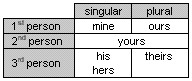

1.110 Mentioning possession: possessive pronouns
When you are talking about people or things, you often want to say in what way they are connected with each other. There are several different ways in which you can do this, but you most often do it by using a possessive pronoun to indicate that something belongs to someone or is associated with them.
1.111
Here is a table showing possessive pronouns:
Note that 'its' cannot be used as a possessive pronoun.